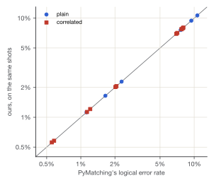
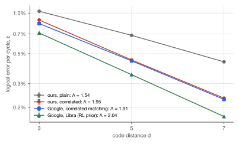
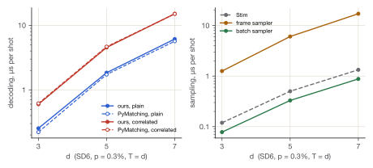
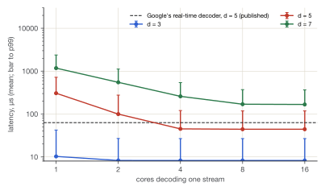
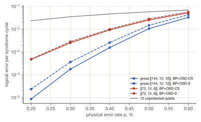
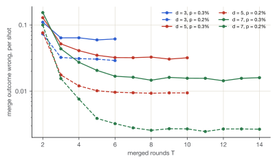

Technical report · stabilizer-qec 0.4.0
A surface-code simulator and decoder, checked against Stim, PyMatching and Google’s hardware
Exact, correlated and belief matching on Google’s Willow and Sycamore data, window decoding at Willow’s cycle, the gross code by BP+OSD and its logical measurement, lattice surgery, and a resource estimate
qcompiler.jaspersands.com · github.com/Jaspersands/quantum-simulator-qec · PDF
Summary
stabilizer-qec is a surface-code simulator and decoder written in Rust. It runs natively, from Python, and in a web browser. Its results come in eight parts.
- Error models. It builds error models identical to Stim’s, fault by fault, on 15 circuits (the largest relative difference is 1.1e-15).
- Matching. Its exact matcher agrees with PyMatching on every shot but ties: 13 disagreements in 600,000 shots, 0 of them not ties. Its correlated matcher agrees with PyMatching 2.4’s correlated mode just as closely, and fails 19% less often than plain matching.
- Google’s hardware. On Google’s own recordings (550 experiments, 27.5 million shots) it rebuilds the detection events bit for bit. Its correlated matcher, using Google’s SI1000 prior on Willow, reaches Λ = 1.95 [1.94, 1.95]. Google’s own correlated matcher on the same prior reaches 1.91. Its belief-matching reproduces
ldpc’s posteriors bit for bit, and makes Sycamore’s d = 5 beat d = 3 as Google’s does (Λ = 1.016 [1.01, 1.02]). - Throughput. Its bit-parallel sampler takes 0.88 µs a shot at d = 7, against Stim’s 1.33 µs.
- Real time. Parallel windows decode Willow’s recorded d = 5 syndromes with correlated matching and keep up with its 1.1 µs cycle on 4 cores. A simulated million-round stream at the same detection rate holds a 82 µs mean latency on 2 cores. Windowed decoding reaches the same Λ as global decoding (1.95 [1.94, 1.95]).
- Beyond the surface code. The IBM gross code, decoded by BP+OSD that equals
ldpc’s on every shot checked but ties, keeps 12 logical qubits failing 2.6 to 9.3 times less often than twelve d = 11 surface-code patches, on a tenth of the qubits. The logical action of each of its automorphisms is computed exactly. Its gauging measurement of a logical operator, built from the definition, loses distance: on the code while merged has distance 8 in X and 12 in Z, until 4 added edges restore 12. - Lattice surgery. A Z⊗Z measurement between two patches, written as one circuit and equal to Stim’s model, shows the timing law directly: the merge outcome’s failure rate stops falling at d merged rounds. A logical CNOT, compiled from two such measurements and an ancilla, fails 1.03% of the time at d = 7 and p = 0.2%, and 0.75 to 0.93 times as often as its three patches held idle for as long.
- What it would take. A model with magic-state factories, Litinski’s floor plans, reaction time and storage lands within 1.6 times Gidney’s RSA-2048 qubits and 1.1 times his time on his assumptions. On this project’s measured decoder, reaction time dominates; on Willow’s measured Λ, a thousand logical qubits running a billion operations need about 41 million physical qubits.
1 Introduction
A surface code protects a logical qubit by measuring checks on many physical qubits, round after round, and handing the outcomes to a decoder. The decoder infers which errors most likely occurred and whether they flipped the logical qubit. Two questions decide whether it is any good:
- Is it correct? Is its error model the circuit’s, and is its matching exact?
- Is it fast enough? A quantum computer produces a round every microsecond or so, and a decoder that falls behind never catches up.
This report describes an engine built to answer both. It covers how the engine works, how it is checked, and what it measures. Every number below is read from a file committed with the source, and the build fails if one is missing. The same engine drives an interactive explainer that runs it in the reader’s browser, at qcompiler.jaspersands.com.
The work is organised around three references the field already trusts:
- Stim (Gidney, 2021) for circuits, error models and sampling;
- PyMatching 2 (Higgott and Gidney, 2023) for matching;
- Google’s published recordings from Willow (2024) and Sycamore (2022) for real hardware.
Where this engine and a reference can be made to compute the same thing, they are compared exactly. Where they cannot, the comparison is statistical, with its uncertainty stated.
2 The engine
2.1 Circuits and error models
The engine reads and writes the part of Stim’s circuit language that memory experiments use:
- resets,
H,CXandCZ, and measurements; - depolarizing and Pauli channels;
- detectors and observables with their coordinates,
SHIFT_COORDS, andREPEATblocks; - for Google’s circuits, sweep-controlled
CXand the Pauli gates.
Two generators write rotated and XZZX memory experiments. One uses the engine’s own circuit-level noise; the other uses SD6, the standard model in which published thresholds are quoted.
A detector error model lists every independent fault and the detectors and observables it flips. The engine builds one by walking the circuit backwards once. For each qubit it carries the set of detectors that an X or a Z error there would flip, as Stim’s error analyzer does. Matching needs graph-like faults, so a fault that sets off more than two detectors is split into pieces. The engine splits them the way Stim does: by what the rest of the same noise channel can express, then by Stim’s global pass. The first, simpler split looked right and was not (section 3).
2.2 Sampling
There are two samplers:
- The frame sampler propagates a Pauli frame through the circuit one shot at a time. It never looks at the error model, so the model and the sampler can disagree, and the checks can see it.
- The batch sampler keeps 64 shots in each machine word: two words per qubit, one for X and one for Z. It draws noise as whole words by geometric skipping, so a location at costs about one random number, not 64. It runs
REPEATblocks without flattening them, with measurement records in a ring buffer sized by the longest lookback. A million-round memory costs one round’s instructions, and its detection events stream out as they are made.
2.3 Matching
Each graph edge is weighted , discretised to even integers, and decoded by sparse blossom, the algorithm PyMatching 2 is built on (Higgott and Gidney, arXiv:2303.15933):
- Every defect grows a region on the detector graph at the same rate, and a region’s radius is its dual variable.
- Collisions between regions are found by the growth itself.
- Edmonds’ alternating trees and blossoms act on regions rather than on vertices.
The earlier dense matcher (Dijkstra from every defect, then blossom on the complete graph) stays in the code as the sparse one’s first oracle.
Correlated matching follows PyMatching 2.4’s enable_correlations=True, read from its source, so that PyMatching can serve as the oracle. A Y error sets off checks in both halves of the detector graph, and the error model records it as two pieces that fire together. Plain matching forgets that; correlated matching uses it in two passes:
- Match once. Trace a shortest path for each matched pair into one edge set.
- Lower the weights. For every edge in that set, lower the weight of each edge it shares a fault with to . Here is the probability that edge fired, given that edge did.
- Match again on the lowered weights, and read off the prediction.
2.4 Window decoding
A global decoder waits for the experiment to end. A window decoder matches a few rounds at a time:
- It decodes a window of commit + buffer rounds and keeps the edges of its correction that touch the commit region.
- It toggles their far ends, so a correction reaching past the region leaves a defect for the next window.
- An edge leaving the window becomes a boundary half-edge of its own, kept apart from the real boundary. A defect near the window’s end can then wait for a partner not yet seen.
There are two schedules:
- Sliding windows run one after another, so each stream uses one core.
- Parallel windows (Skoric et al., arXiv:2209.08552; Tan et al., arXiv:2209.09219) come in two layers. Layer A’s windows are spaced apart, with virtual boundaries on both sides. Layer B’s fill the gaps once A has committed. Each layer’s windows are independent, so one stream can use many cores.
Correlated matching works inside a window: the second pass is traced on the lowered weights, and the correlation rules are restricted to the window’s edges.
Streaming. A million-round experiment has no error model that fits in memory, and none is needed: a memory circuit repeats. The stream decoder builds the model of a short template once, and gives each window of the stream the graph of the template window in the same position. The first and last windows come from the template’s ends, the bulk from its middle. Rounds are pushed in as the batch sampler makes them, and a window is decoded as soon as its last round has arrived and the windows it depends on are done. Once no window still needs a round, the round is dropped, and any defect left in it is counted as unexplained.
2.5 Where it runs
The same Rust runs natively, from Python (a PyO3 module, pip-installable as one abi3 wheel for Python 3.9 on), and as WebAssembly in the browser. The page has no build step. It runs the engine in a pool of web workers, one per core but one, at most eight. The engine is compiled once and shared by every worker.
3 How it is checked
The checks come in three layers, strictest first:
- Exact oracles. Where an answer is unique, it is checked exactly:
- The sparse matcher’s optimal weight must equal the dense matcher’s and a brute-force search’s, on random graphs and on sampled surface-code shots.
- Every single fault of every circuit, decoded alone, must predict its own logical flip.
- One window as long as the stream must reproduce the global decoder’s traced correction.
- The batch sampler must reproduce the frame sampler’s shots when every channel is made deterministic.
- References. Stim’s error models must equal ours, and PyMatching’s matchings must tie ours. Google’s detection events must equal those we rebuild from their raw measurements.
- Statistics. Where only a rate can be compared, the comparison states its interval: per-detector χ² between samplers, Wilson intervals on logical error rates, and parametric bootstrap intervals on Λ.
The layers have caught real defects. They are listed in full in the repository’s README, and four of them show what each layer is for:
- A decomposition that passed every unit test. It split wide faults into their X and Z halves. It agreed with Stim fault for fault, because that comparison is about faults, not pieces. But the exhaustive single-fault check found faults at d = 3 that it decoded into logical errors: a Y error on a boundary qubit, kept whole, became an edge bridging the two matching graphs. The fix reproduces Stim’s decomposition exactly, and the matching graphs in section 4.2 are the result.
- Refitting that biased the intervals. A bootstrap that let each redrawn data set re-choose its own points and weights biased the redrawn fidelities about 0.2% low. Averaged over eighteen patches, that made the intervals lopsided. It was caught before anything was quoted: the intervals had come out asymmetric where they should not have.
- Parallel windows with no buffer. They were found to leave corrections nowhere to land. The every-defect-explained check found them, and they are now refused.
- A stream count that could not fail. Code review found that the stream decoder dropped rounds without counting the defects left in them, so its “unexplained” count was zero by construction. It now counts them. A test that skips a window shows the leftover defect counted (and fails on the old code), and the million-round run below was repeated with the working count.
4 Results
4.1 Thresholds
SD6 thresholds from repeated sweeps over d = 3 to 9, each fitted by finite-size scaling. The fit includes the leading correction to scaling, over the widest window the scaling form describes, chosen by reduced χ² (4 independent sweeps per code; data/sweeps/):
| code | p_th (mean ± spread) | ν | uncorrected crossing | sweeps |
|---|---|---|---|---|
| rotated | 0.54% ± 0.01 | 1.11 | 0.48% | 4 |
| XZZX | 0.51% ± 0.01 | 1.22 | 0.47% | 4 |
The “uncorrected crossing” is where the curves cross without the correction term, which small patches pull low; the corrected fit is the threshold.
4.2 Agreement with Stim and PyMatching
Error models. The comparison covers Stim’s own generated rotated memory, and ours for both codes under both noise models, at d = 3, 5 and 7 with . For all of them, both models list the same faults with the same probabilities, and the decomposed matching graphs are identical edge for edge:
| circuit | detectors, d = 3 / 5 / 7 | mechanisms | graph edges | largest Δp/p | vs Stim |
|---|---|---|---|---|---|
| Stim’s rotated_memory_z | 24 / 120 / 336 | 219 / 1,677 / 5,471 | 78 / 502 / 1,558 | 9.9e-16 | identical |
| rotated, engine model | 36 / 156 / 408 | 223 / 1,261 / 3,739 | 103 / 581 / 1,723 | 2.2e-16 | identical |
| rotated, SD6 | 24 / 120 / 336 | 219 / 1,677 / 5,471 | 78 / 502 / 1,558 | 1.1e-15 | identical |
| XZZX, engine model | 36 / 156 / 408 | 223 / 1,261 / 3,739 | 103 / 581 / 1,723 | 2.9e-16 | identical |
| XZZX, SD6 | 24 / 120 / 336 | 219 / 1,677 / 5,471 | 78 / 502 / 1,558 | 1.1e-15 | identical |
Plain matching. Stim sampled 100,000 shots at each point, and both decoders decoded the same detection events. Two exact matchers can disagree only where two corrections tie in weight. There were 13 disagreements in 600,000 shots, and every one is a tie: the two matchings’ weights are equal to within the discretisation noise.
| d | p | PyMatching | ours | ours, own model | disagreements | non-ties | PyMatching µs | ours µs |
|---|---|---|---|---|---|---|---|---|
| 3 | 0.3% | 2.289% | 2.289% | 2.289% | 0 | 0 | 0.2 | 0.3 |
| 3 | 0.6% | 7.603% | 7.603% | 7.603% | 0 | 0 | 0.5 | 0.5 |
| 5 | 0.3% | 1.647% | 1.649% | 1.649% | 2 | 0 | 1.7 | 1.8 |
| 5 | 0.6% | 9.432% | 9.432% | 9.432% | 4 | 0 | 4.1 | 4.1 |
| 7 | 0.3% | 1.124% | 1.124% | 1.124% | 0 | 0 | 5.7 | 6.1 |
| 7 | 0.6% | 10.653% | 10.652% | 10.652% | 7 | 0 | 14.3 | 14.8 |
Correlated matching, on 1,200,000 shots: 696 disagreements, and none of them a bug. For each, PyMatching’s own first-pass edges went into our second pass:
- in 682 cases this reproduces PyMatching’s answer, because the two first passes traced different, equally short paths;
- the other 14 tie PyMatching’s second-pass weight;
- 0 are neither.
Correlated matching fails 53,030 times against plain matching’s 65,316, 19% fewer.
| code | d | p | PyMatching | ours | ours, plain | disagreements | path ties | weight ties | non-ties |
|---|---|---|---|---|---|---|---|---|---|
| rotated | 3 | 0.3% | 2.061% | 2.061% | 2.332% | 0 | 0 | 0 | 0 |
| rotated | 3 | 0.6% | 6.951% | 6.951% | 7.708% | 0 | 0 | 0 | 0 |
| rotated | 5 | 0.3% | 1.133% | 1.131% | 1.645% | 8 | 7 | 1 | 0 |
| rotated | 5 | 0.6% | 7.735% | 7.738% | 9.335% | 31 | 27 | 4 | 0 |
| rotated | 7 | 0.3% | 0.555% | 0.558% | 1.037% | 29 | 29 | 0 | 0 |
| rotated | 7 | 0.6% | 7.932% | 7.906% | 10.590% | 274 | 270 | 4 | 0 |
| XZZX | 3 | 0.3% | 2.020% | 2.020% | 2.293% | 0 | 0 | 0 | 0 |
| XZZX | 3 | 0.6% | 7.098% | 7.098% | 7.665% | 0 | 0 | 0 | 0 |
| XZZX | 5 | 0.3% | 1.210% | 1.210% | 1.639% | 8 | 8 | 0 | 0 |
| XZZX | 5 | 0.6% | 7.739% | 7.745% | 9.323% | 22 | 22 | 0 | 0 |
| XZZX | 7 | 0.3% | 0.581% | 0.579% | 1.103% | 32 | 32 | 0 | 0 |
| XZZX | 7 | 0.6% | 8.027% | 8.033% | 10.646% | 292 | 287 | 5 | 0 |

Speed. Single-threaded, our plain matcher takes 1.01 to 1.14 times PyMatching’s time per shot, and our correlated matcher 0.91 to 1.01 times PyMatching’s correlated mode. PyMatching’s C++ has had years of tuning that this matcher has not. The gap is a roughly constant factor that does not grow with d, as the figure below shows.
4.3 Google’s hardware
Google has published everything its chips recorded in two surface-code memory experiments:
- Willow (2024): d = 3, 5 and 7, 1 to 250 rounds;
- Sycamore (2022): d = 3 and 5, 1 to 25 rounds.
The data comes as raw measurements, sweep bits, circuits, error models and each of Google’s decoders’ predictions. Both datasets are CC BY 4.0, from Zenodo records 13273331 and 6804040.
Reading the chips’ output. A detector compares a parity of measurements with what a noiseless run gives. The engine runs the ideal circuit once on its stabilizer tableau to get that reference, and once more per sweep bit to get each bit’s effect. This is independent of the backward walk that builds error models. Over all 550 experiments and 27.5 million shots:
- the detection events and observable flips rebuilt from raw measurements equal Google’s bit for bit (550 of 550 experiments);
- our model of every noisy circuit is identical to Stim’s (550 of 550).
One fit, Google’s. Λ is fitted the way Google fits it:
- Per patch and basis, the logical fidelity is fitted as by weighted least squares on its logarithm, from round 10 for Willow and round 3 for Sycamore.
- Per distance, ε is the mean over patches and bases.
- Λ is of a line through against .
- Intervals come from a parametric bootstrap with 400 draws.
As validation, Google’s own tensor-network predictions for Sycamore, fitted this way, give ε₃ = 3.028% and ε₅ = 2.914%. The published values are 3.028% and 2.914%: the same, to the digits published.
| decoder | prior | ε, d = 3 | ε, d = 5 | ε, d = 7 | Λ [95%] |
|---|---|---|---|---|---|
| ours, plain | SI1000 | 1.032% | 0.684% | 0.435% | 1.54 [1.53, 1.55] |
| ours, correlated | SI1000 | 0.888% | 0.449% | 0.234% | 1.95 [1.94, 1.95] |
| ours, correlated | RL-optimised | 0.808% | 0.425% | 0.222% | 1.91 [1.90, 1.92] |
| ours, correlated | ours, from the circuit | 0.884% | 0.468% | 0.241% | 1.91 [1.91, 1.92] |
| Google, correlated matching | SI1000 | 0.836% | 0.443% | 0.229% | 1.91 [1.90, 1.92] |
| Google, correlated matching | RL-optimised | 0.759% | 0.404% | 0.210% | 1.90 [1.90, 1.91] |
| Google, Harmony | RL-optimised | 0.729% | 0.387% | 0.206% | 1.88 [1.88, 1.89] |
| Google, Libra | RL-optimised | 0.712% | 0.349% | 0.171% | 2.04 [2.03, 2.05] |

- Correlated matching is most of the story. With the same prior, it takes Λ from 1.54 to 1.95, and ε at d = 7 from 0.435% to 0.234%.
- Ours sits beside Google’s own correlated matcher on the same prior, 0.234% against 0.229% at d = 7. It is further behind at d = 3 (0.888% against 0.836%), which is why its Λ comes out higher: Λ rewards improving with size, not being good.
- Our own model of the noisy circuit, built from Google’s circuit with no fitting to the data, does about as well as Google’s fitted SI1000 prior (0.241% at d = 7).
- Google’s best decoders are better still. Libra reaches Λ = 2.04 and ε₇ = 0.171%. The published neural-network decoder’s 2.14 cannot be refitted here: its predictions are not in the dataset.
| decoder | prior | ε, d = 3 | ε, d = 5 | Λ [95%] |
|---|---|---|---|---|
| ours, plain | circuit | 4.012% | 4.354% | 0.92 [0.91, 0.93] |
| ours, correlated | circuit | 3.507% | 3.558% | 0.99 [0.98, 0.99] |
| ours, correlated | pij, cross-fitted | 3.424% | 3.466% | 0.99 [0.98, 1.00] |
| Google, PyMatching | circuit | 4.012% | 4.362% | 0.92 [0.91, 0.93] |
| Google, correlated matching | circuit | 3.497% | 3.597% | 0.97 [0.96, 0.98] |
| Google, belief matching | pij | 3.118% | 3.056% | 1.02 [1.01, 1.03] |
| Google, tensor network | pij | 3.028% | 2.914% | 1.04 [1.03, 1.05] |
On Sycamore, our plain matcher reproduces the PyMatching predictions Google recorded (4.012% against 4.012% at d = 3). The two disagree on 8,448 shots over the whole dataset. On every one of them, our matching’s weight equals the optimum PyMatching 2.4 finds (0 are not optimal): these are ties, broken differently by the older PyMatching that Google used. Sycamore’s Λ ≈ 1 was that paper’s point, the first time a larger surface code beat a smaller one at all, and only with the best decoders.
4.4 Belief-matching
Matching weighs every graph edge by its prior alone. Belief-matching (Higgott, Bohdanowicz, Kubica, Flammia and Campbell, PRX 13, 031007, 2023) works in three steps:
- Belief propagation runs over the whole error model: every fault a variable, every detector a check, nothing split into pieces.
- The graph is re-weighted. Each edge gets , where is the sum of the posteriors of the faults whose decomposition contains it.
- The sparse matcher decodes on those weights. Where BP converges by itself, its own correction is the answer.
The implementation is written to reproduce the authors’ package, beliefmatching, and the BP library it runs on, ldpc, step for step. Both are checked exactly:
- BP. Over 4,040 syndromes in 56 configurations, the largest difference between our posterior log-likelihood ratios and
ldpc’s is 0.0. The configurations cover random matrices and a surface code’s hypergraph, product-sum and min-sum, and 1 to 20 iterations. 0 hard decisions, convergence flags or iteration counts differ. - Belief-matching. Over 20,000 shots of SD6 memories at d = 3, 5 and 7, it disagrees with
beliefmatchingon 0 shots, and BP’s convergence differs on 0. Single-threaded at d = 7 it takes 5.6 ms against 11.6 ms a shot; the reference rebuilds a matching graph for every shot.
Sycamore, every shot, with the data-fitted priors cross-fitted as Google used them, against Google’s own recorded belief-matching:
| decoder | prior | ε, d = 3 | ε, d = 5 | Λ [95%] |
|---|---|---|---|---|
| ours, belief-matching | pij, cross-fitted | 3.154% | 3.104% | 1.02 [1.01, 1.02] |
| ours, belief-matching | circuit | 3.249% | 3.190% | 1.02 [1.01, 1.03] |
| Google, belief matching | pij | 3.118% | 3.056% | 1.02 [1.01, 1.03] |
| Google, tensor network | pij | 3.028% | 2.914% | 1.04 [1.03, 1.05] |
| Google, correlated matching | circuit | 3.497% | 3.597% | 0.97 [0.96, 0.98] |
- d = 5 beats d = 3. Ours gives Λ = 1.016 [1.01, 1.02], Google’s 1.020 [1.01, 1.03].
- Close, but not the same. Ours agrees with Google’s predictions on 97.2% of 6.5 million shots and fails 0.7% more often. Google’s BP settings are not in the dataset, and more iterations do not close the gap.
Willow, on the first 10,000 shots of each of 420 experiments. BP on Willow’s longest experiments costs about 25 ms a shot even on ten cores, so there are fewer shots. Every decoder in this table is scored on the same shots:
| decoder, same shots | ε, d = 3 | ε, d = 5 | ε, d = 7 | Λ [95%] |
|---|---|---|---|---|
| ours, belief-matching | 0.824% | 0.452% | 0.251% | 1.81 [1.80, 1.83] |
| ours, correlated matching | 0.888% | 0.448% | 0.231% | 1.96 [1.95, 1.98] |
| ours, plain matching | 1.028% | 0.675% | 0.429% | 1.55 [1.54, 1.56] |
| Google, correlated matching | 0.835% | 0.442% | 0.229% | 1.91 [1.90, 1.92] |
| Google, Libra (RL prior) | 0.713% | 0.350% | 0.170% | 2.05 [2.03, 2.06] |
- Belief-matching wins small and loses large. At d = 3 it beats every matcher in the table (0.824%, against 0.888% for our correlated matcher and 0.835% for Google’s). At d = 7 it is worse (0.251% against 0.231%), so its Λ, 1.81 [1.80, 1.83], falls below correlated matching’s 1.96 [1.95, 1.98].
- Longer BP does not change it. On the same shots at d = 7, 50 rounds, belief-matching fails 960 times with 20 iterations and 959 with 100, against correlated matching’s 902. BP settles alone on 16% of Willow’s shots.
- On Sycamore it is among the best. Those experiments run at most 25 rounds with priors fitted to the data, and belief-matching is one of the two best decoders there, Google’s and ours alike.
4.5 Throughput
Sampling speed per shot, single-threaded, rotated SD6 with T = d. Stim is timed through its Python API, compiled beforehand and writing packed bits; ours includes transposing batches into Stim’s b8 layout:
| d | p | Stim | frame sampler | batch sampler | Stim ÷ batch |
|---|---|---|---|---|---|
| 3 | 0.3% | 0.12 µs | 1.26 µs | 0.08 µs | 1.5× |
| 3 | 0.6% | 0.20 µs | 1.33 µs | 0.10 µs | 2.0× |
| 5 | 0.3% | 0.50 µs | 6.1 µs | 0.33 µs | 1.5× |
| 5 | 0.6% | 0.87 µs | 6.1 µs | 0.42 µs | 2.1× |
| 7 | 0.3% | 1.33 µs | 17.1 µs | 0.88 µs | 1.5× |
| 7 | 0.6% | 2.3 µs | 17.7 µs | 1.10 µs | 2.1× |

The batch sampler is 14 to 19 times as fast as the frame sampler, and faster than Stim’s as called from Python. Decoding, not sampling, is now almost all of a shot’s cost.
On the page, work is split across a pool of workers. On the development machine the site’s section 7 threshold sweep ran 2.5 to 4.4 times faster with the pool than with one worker; the spread comes from whether workers land on performance or efficiency cores.
4.6 Real time
Willow runs a round of error correction every 1.1 µs. Google has decoded a d = 5 memory in real time over a million rounds with a 63 µs mean latency (arXiv:2408.13687), on its own hardware and with its own definition of latency. Here, every window’s decode time is measured natively on Apple M2 Pro, one core at a time. Those times are then scheduled with rounds arriving every 1.1 µs:
- A window starts once its last round has arrived and, for layer B, both its layer-A neighbours are done.
- Latency is the time from the arrival of a window’s last round to its commit.
- A stream keeps up if its latency does not grow along it.
The windows commit d rounds with a buffer of d. The streams are Willow’s recorded syndromes, 2,000 shots at each of d = 3, 5 and 7, at 250 rounds, decoded with Google’s SI1000 prior:
| stream | windows | matcher | window decode | keeps up on | mean latency | p99 |
|---|---|---|---|---|---|---|
| d = 3 | sliding | plain | 1.07 µs | 1 core | 1.17 µs | 5.2 µs |
| d = 3 | parallel | plain | 1.34 µs | 1 core | 5.4 µs | 14.1 µs |
| d = 3 | sliding | correlated | 2.1 µs | 1 core | 4.2 µs | 24 µs |
| d = 3 | parallel | correlated | 2.6 µs | 1 core | 8.0 µs | 26 µs |
| d = 5 | sliding | plain | 7.0 µs | no (one core by design) | — | — |
| d = 5 | parallel | plain | 8.6 µs | 2 cores | 19.2 µs | 46 µs |
| d = 5 | sliding | correlated | 14.0 µs | no (one core by design) | — | — |
| d = 5 | parallel | correlated | 17.3 µs | 4 cores | 34 µs | 83 µs |
| d = 7 | sliding | plain | 26 µs | no (one core by design) | — | — |
| d = 7 | parallel | plain | 31 µs | 4 cores | 58 µs | 122 µs |
| d = 7 | sliding | correlated | 53 µs | no (one core by design) | — | — |
| d = 7 | parallel | correlated | 65 µs | 8 cores | 114 µs | 236 µs |

- Sliding windows keep up only at d = 3, with either matcher. Everywhere else one core is too slow, which is why parallel windows exist.
- At d = 5, parallel windows with correlated matching keep up on 4 cores with a 34 µs mean latency. At d = 7 they need 8.
A million rounds. The stream is a rotated d = 5 memory under SD6 at p = 0.313%, the noise at which its detectors fire as often as Willow’s do (7.5% of detectors a round). There are 64 streams of 1,000,000 rounds each, sampled round by round and decoded as they arrive:
| windows | matcher | streams | windows each | unexplained | window decode | cores | mean latency | p99 |
|---|---|---|---|---|---|---|---|---|
| sliding | plain | 64 | 200,000 | 0 | 5.8 µs | — | — | — |
| parallel | plain | 64 | 133,334 | 0 | 7.7 µs | 1 | 34 µs | 129 µs |
| sliding | correlated | 64 | 200,000 | 0 | 12.3 µs | — | — | — |
| parallel | correlated | 64 | 133,334 | 0 | 16.1 µs | 2 | 82 µs | 318 µs |
- Every defect of every stream is explained (0 left, counted as rounds are dropped).
- Correlated matching on 2 cores holds a 82 µs mean latency (318 µs at the 99th percentile) over a million rounds.
- Throughput. On all 10 cores, independent streams decode at 6.3 million rounds a second with plain matching and 3.2 million with correlated. Willow’s cycle demands 0.91 million a second per stream.
Accuracy. Windowing costs nothing in Λ. The run covers 392 Willow experiments (all but the single-round ones, which have nothing to window), 50,000 shots each. Every one was decoded globally and by sliding and parallel windows, fitted as above:
| decoder | matcher | buffer | ε, d = 3 | ε, d = 5 | ε, d = 7 | Λ [95%] |
|---|---|---|---|---|---|---|
| global | plain | — | 1.032% | 0.684% | 0.435% | 1.54 [1.54, 1.55] |
| sliding | plain | d | 1.034% | 0.685% | 0.436% | 1.54 [1.53, 1.54] |
| parallel | plain | d | 1.033% | 0.685% | 0.436% | 1.54 [1.53, 1.54] |
| parallel | plain | d/2 (d = 5 only) | — | 0.694% | — | — |
| parallel | plain | 2d (d = 5 only) | — | 0.684% | — | — |
| global | correlated | — | 0.888% | 0.449% | 0.234% | 1.95 [1.94, 1.95] |
| sliding | correlated | d | 0.892% | 0.454% | 0.236% | 1.94 [1.94, 1.95] |
| parallel | correlated | d | 0.892% | 0.452% | 0.235% | 1.95 [1.94, 1.95] |
| parallel | correlated | d/2 (d = 5 only) | — | 0.460% | — | — |
| parallel | correlated | 2d (d = 5 only) | — | 0.451% | — | — |
- Correlated matching gives the same Λ either way: 1.95 [1.94, 1.95] for parallel windows, 1.95 [1.94, 1.95] globally.
- A buffer of d/2 is too short. It raises ε₅ by 1.8%, while a buffer of 2d gains nothing over d.
- Simulated SD6 agrees. At d = 3, 5 and 7, and , 50 rounds and 20,000 shots, every window decoder’s failures are within 1.6% of the global decoder’s on the same shots.
- No defect was left unexplained (0 over every Willow run).
4.7 Beyond the surface code: the gross code
IBM’s bivariate bicycle codes (Bravyi et al., Nature 627, 778, 2024) keep many logical qubits in one block. The gross code, , stores 12 at distance 12 on 144 data and 144 check qubits. Its checks have weight six, and a single fault sets off several at once, so it cannot be matched. It is decoded by BP+OSD: belief propagation, and where BP fails to settle, ordered- statistics decoding, which solves the syndrome equation on the faults BP trusts least.
The engine builds the code and its logical operators over GF(2), and the paper’s Z-basis memory from the depth-8 syndrome cycle in the paper’s own simulation code. Each piece is checked against something independent:
- The check matrices equal ones built as Bravyi et al.’s code builds them, and .
- Without noise every detector is deterministic. This is what shows that the reconstructed schedule measures the stabilizers.
- The error model equals Stim’s for 8,784 faults at 12 cycles.
- BP+OSD equals
ldpc’s. Over 700 shots, 700 corrections equal those ofldpc’sBpOsdDecoder, for OSD-0 and OSD-CS of order 7, with its adaptive min-sum scaling. Making that exact meant ordering tied posteriors the wayldpcdoes. Min-sum run long enough repeats values, and one tied pair in 300 shots changed which columns OSD-CS paired up.
The Z memory runs 12 cycles for the gross code and 6 for . A shot fails if any logical qubit does, and the decoder is the paper’s: BP+OSD-CS of order 7, with up to 10,000 BP iterations.
| code | p | shots | failures | per cycle, OSD-CS | per cycle, OSD-0 | BP alone |
|---|---|---|---|---|---|---|
| gross [[144, 12, 12]] | 0.2% | 401,408 | 42 | 8.7 × 10⁻⁶ | 2.4 × 10⁻⁵ | 99.7% |
| gross [[144, 12, 12]] | 0.3% | 94,208 | 202 | 1.8 × 10⁻⁴ | 3.7 × 10⁻⁴ | 97.8% |
| gross [[144, 12, 12]] | 0.4% | 12,288 | 230 | 1.6 × 10⁻³ | 2.6 × 10⁻³ | 90.5% |
| gross [[144, 12, 12]] | 0.5% | 2,048 | 247 | 1.1 × 10⁻² | 1.5 × 10⁻² | 68.7% |
| gross [[144, 12, 12]] | 0.6% | 2,048 | 684 | 3.3 × 10⁻² | 4.4 × 10⁻² | 39.5% |
| [[72, 12, 6]] | 0.2% | 71,680 | 204 | 4.7 × 10⁻⁴ | 4.9 × 10⁻⁴ | 99.9% |
| [[72, 12, 6]] | 0.3% | 14,336 | 217 | 2.5 × 10⁻³ | 2.9 × 10⁻³ | 98.8% |
| [[72, 12, 6]] | 0.4% | 4,096 | 225 | 9.4 × 10⁻³ | 1.0 × 10⁻² | 95.1% |
| [[72, 12, 6]] | 0.5% | 2,048 | 295 | 2.6 × 10⁻² | 2.8 × 10⁻² | 87.4% |
| [[72, 12, 6]] | 0.6% | 2,048 | 565 | 5.2 × 10⁻² | 5.7 × 10⁻² | 73.2% |

Beside the surface code. Twelve rotated surface-code patches hold the same 12 logical qubits on 2,892 qubits, ten times as many. The comparison measures them the same way: a Z memory of 12 rounds at the same p, decoded by correlated matching.
| p | gross code, 288 qubits | twelve d = 11 patches, 2,892 qubits | ratio |
|---|---|---|---|
| 0.2% | 8.7 × 10⁻⁶ | 8.2 × 10⁻⁵ | 9.3× |
| 0.3% | 1.8 × 10⁻⁴ | 1.2 × 10⁻³ | 6.8× |
| 0.4% | 1.6 × 10⁻³ | 7.9 × 10⁻³ | 5.0× |
| 0.5% | 1.1 × 10⁻² | 3.3 × 10⁻² | 3.1× |
| 0.6% | 3.3 × 10⁻² | 8.7 × 10⁻² | 2.6× |
With a tenth of the qubits the gross code fails 2.6 to 9.3 times less often, at every p measured. SD6 also puts noise on the surface code’s Hadamards, which the bivariate bicycle circuit does not use, so the comparison slightly favours the gross code.
Computing on it. A memory is half of a computer. The gross code computes two ways, and the engine builds both exactly.
- Automorphisms. Every shift of both halves of the data maps the code to itself, and so does Bravyi et al.’s ZX-duality, so each is a logical Clifford gate that adds no checks. For all 144 maps the engine checks this over GF(2) and computes the action on the 12 logical qubits as a symplectic matrix; an independent numpy computation agrees bit for bit. The actions form a group of order 72: acts as the identity, and the translates of each of Bravyi et al.’s weight-12 logicals and span a block of 6 logical qubits (36 distinct classes) that every shift keeps.
- Logical measurement. To measure a weight-12 logical , Cross, He, Rall and Yoder attach an ancilla system, the gauging construction of Williamson and Yoder. The Z checks that touch the operator become edges between its qubits, each with an ancilla qubit; a Gauss-law check per qubit multiplies to ; flux checks on the cycles fix the gauge. Their paper gives the construction but no edge lists, so the engine builds it from the definition, and checks it.
The minimal system loses distance. Built on , the minimal system uses 37 ancilla qubits, but the code while merged has distance 8 in X and 12 in Z, exactly. The graph has a worst cut of 6 vertices with 2 edges leaving them. The Gauss-law checks on those vertices multiply to X on them and on the edges leaving them, so a logical containing them can trade the one for the other and get shorter. Williamson and Yoder’s condition is that every set of at most half the vertices has at least as many edges leaving it as it has vertices (a Cheeger constant of 1). Adding edges across the worst cut until it holds takes 4 edges for : 45 ancilla qubits, a heaviest flux check of 5, 13 ticks per merged cycle against the memory’s 8, and distance 12 in X and 12 in Z. The product , the joint measurement a CNOT needs, fares worse minimal: 11 of its vertices have only 3 edges leaving them, and its distance falls to 4. Expanded, it keeps 12, with 91 ancillas against 63. (For its four-ended hyperedges, an edge leaves a set when an odd number of its ends lie in it.) This is for these operators: Cross et al.’s eight are written in a notation that need not give , and their shared system reports distance 12. ’s minimal system keeps 12 though its constant is 2/3: the condition is sufficient, not necessary.
| operator | system | ancillas (edges + Gauss + flux) | heaviest flux | ticks per cycle | worst cut | distance, X | distance, Z |
|---|---|---|---|---|---|---|---|
| X(f, 0) | minimal | 37 (18 + 12 + 7) | 8 | 12 | 2 / 6 | 8 | 12 |
| X(f, 0) | expanded | 45 (22 + 12 + 11) | 5 | 13 | 6 / 6 | 12 | 12 |
| X(g, h) | minimal | 37 (18 + 12 + 7) | 6 | 12 | 4 / 6 | 12 | 12 |
| X(g, h) | expanded | 41 (20 + 12 + 9) | 5 | 13 | 6 / 6 | 12 | 12 |
| X(f, 0) X(g, h) | minimal | 63 (31 + 22 + 10) | 11 | 16 | 3 / 11 | 4 | 12 |
| X(f, 0) X(g, h) | expanded | 91 (45 + 22 + 24) | 9 | 15 | 8 / 8 | 12 | 12 |
The worst cut is exact, over every set of at most half the vertices. The distances are exact, by integer programming: the lightest logical that anticommutes with each basis element of the other type. The same program finds the gross code’s own distance 12.
The circuit runs the paper’s schedule for the original checks, with the new checks after them on every qubit they share, so every X and Z check pair measures correctly; the determinism check is the proof. Its error model equals Stim’s fault for fault, and BP+OSD’s corrections equal ldpc’s. Of 3,072 shots over the twelve circuits, 13 differed, 10 of them for the product’s minimal system. BP’s posteriors were bit-identical, but many are exactly equal, and ldpc orders equal columns with C++’s std::sort, whose order among equals is the standard library’s. ldpc returns our exact correction once its columns are permuted, so those shots are ties, and the check counts any other difference as a failure.
| operator | system | basis | T | shots | anything wrong | outcome wrong | memory, same length |
|---|---|---|---|---|---|---|---|
| X(f, 0) | expanded | X | 2 | 2,048 | 14.16% | 13.57% | 0.24% |
| X(f, 0) | expanded | X | 4 | 4,096 | 3.61% | 2.71% | 0.29% |
| X(f, 0) | expanded | X | 7 | 4,096 | 2.56% | 0.71% | 0.30% |
| X(f, 0) | expanded | X | 12 | 4,096 | 2.93% | 0.24% | 0.39% |
| X(f, 0) | expanded | Z | 2 | 12,288 | 0.84% | — | 0.30% |
| X(f, 0) | expanded | Z | 4 | 6,144 | 1.74% | — | 0.31% |
| X(f, 0) | expanded | Z | 7 | 4,096 | 3.64% | — | 0.42% |
| X(f, 0) | expanded | Z | 12 | 2,048 | 5.96% | — | 0.37% |
| X(f, 0) | minimal | X | 2 | 2,048 | 13.53% | 13.28% | 0.24% |
| X(f, 0) | minimal | X | 4 | 6,144 | 2.10% | 1.56% | 0.29% |
| X(f, 0) | minimal | X | 7 | 10,240 | 1.22% | 0.31% | 0.30% |
| X(f, 0) | minimal | X | 12 | 6,144 | 1.86% | 0.37% | 0.39% |
| X(f, 0) | minimal | Z | 2 | 14,336 | 0.74% | — | 0.30% |
| X(f, 0) | minimal | Z | 7 | 4,096 | 2.69% | — | 0.42% |
| X(g, h) | expanded | X | 7 | 6,144 | 2.15% | 0.59% | 0.30% |
| X(f, 0) X(g, h) | expanded | X | 7 | 2,048 | 5.71% | 2.69% | 0.30% |
| X(f, 0) X(g, h) | expanded | Z | 7 | 2,048 | 7.13% | — | 0.42% |
- The outcome needs rounds, as a lattice-surgery merge does. With two merged cycles the Gauss-law checks’ last round has nothing after it to compare with, so a measurement error there looks like one in the first round; the decoder must guess, and the outcome is wrong 13.57% of the time. By seven cycles, Cross et al.’s choice, it is 0.71%; at twelve, 0.24%.
- The measurement costs a few times the memory. At seven merged cycles a shot has anything wrong 4.0 (minimal) to 8.4 (expanded) times as often as the memory of the same length in X, and 6.4 to 8.7 times in Z. Cross et al. find 5 to 10 times at with a schedule and decoder they optimise; here .
- At this noise, distance is not the limit. The expanded system fails more often than the minimal one in both bases: at its extra qubits and longer cycle add more faults than distance 12 over 8 removes. Which wins at lower noise is not measured here.
- The merged cycles are the costly part, and why is not settled. In Z, failures grow by about 0.5% per merged cycle against 0.008% per memory cycle, and BP settles 78% of shots at twelve merged cycles against 95% for the memory of the same length. An integer-programming search of each error model finds undetectable logical faults of 10 faults in the merged circuits and 12 in the memory: the fault distance is at most that. The search proves no lower bound, and did not reach the memory’s own bound of 10 that Bravyi et al. report. Before the flux checks closed their comparisons at the split, the same search found one of 6 faults.
4.8 Lattice surgery
Two patches interact by lattice surgery:
- Merge. The checks across the seam between the patches are measured for T rounds.
- Read the product. The product of the new checks along the seam is the joint parity, here .
- Split. The patches are split again.
The engine writes the whole experiment as one circuit: prepare, merge, split, read out. One rule places its detectors, even where checks change shape at the merge and the split. Without noise every detector and observable is deterministic. The error model equals Stim’s fault for fault, and split for split, and every disagreement with PyMatching is a tie.
With one merged round, the error-model builder refuses the circuit, because a single measurement error on a seam check flips the outcome with nothing after it to notice. With three, every single fault is corrected.
The timing law. Here is how often the merge outcome is wrong, against the number of merged rounds T:
| d | p | T = 2 | T = d | T = 2d | T = d, plain | either patch, T = d |
|---|---|---|---|---|---|---|
| 3 | 0.3% | 10.99% | 6.38% | 6.15% | 7.53% | 10.93% |
| 5 | 0.3% | 12.87% | 3.48% | 3.19% | 5.12% | 6.25% |
| 7 | 0.3% | 15.34% | 1.62% | 1.60% | 3.21% | 2.99% |
| 3 | 0.2% | 7.31% | 3.23% | 2.90% | 3.59% | 5.65% |
| 5 | 0.2% | 7.61% | 1.02% | 0.94% | 1.65% | 1.85% |
| 7 | 0.2% | 9.97% | 0.28% | 0.27% | 0.71% | 0.54% |

- T = 2 is a trap that grows with the code. A pair of measurement errors on one seam check flips the outcome unseen, and a bigger code has more seam checks.
- By T = d the curve has flattened. The merge outcome then fails about as often as a single patch of the same size. This is the textbook “d rounds per lattice surgery”, measured, and it is the clock the resource estimate below uses.
Programs. The engine compiles lattice-surgery programs: patches on a grid of tiles, merged along a line (side by side to measure Z⊗Z, one above the other for X⊗X), split and read out, under the same detector rule. Observables are written as terms (a patch’s logical along a line, a merge’s outcome, a merge’s seam records), and the reference simulation checks every one is deterministic. The Z⊗Z experiment above is one such program, and compiles to the same circuits byte for byte.
The logical CNOT puts control C, an ancilla A in and target T in an L.
- is measured ().
- is measured ().
- A is read out in Z ().
The Pauli corrections the outcomes fix are tracked, not applied. Four checks mattered:
- A refused frame. The reference simulation refused a first frame for the inputs. reads X on A’s last row, so must be taken along that row.
- A stale comparison. A second merge exposed a detector-rule case: a seam check measured again after skipping rounds compared itself with a stale value. It now starts over.
- The action, not just the error rate. and , the inputs the error rates use, are left alone by the identity too. Three more noiseless programs pin the gate: must come out a Bell pair, and each fixed once the frame is applied, and must come out unchanged. With the two above, this fixes the images of , , and as a CNOT’s, up to signs, and alone after is refused as random.
- A line is not a product. Three patches merged in a row become one patch holding one logical qubit, so the merge measures and , two parities, not the product . A first version called it a product; review caught it, and each seam now has its own outcome. A true product needs an ancilla region along every patch.
Every program’s error model equals Stim’s fault for fault, and every single fault of each is corrected at d = 3.
| d | p | Z inputs | X inputs | Z inputs, plain | three idle patches | CNOT ÷ idle |
|---|---|---|---|---|---|---|
| 3 | 0.2% | 10.66% | 11.46% | 11.47% | 13.07% | 0.82 |
| 5 | 0.2% | 3.54% | 3.85% | 5.98% | 4.50% | 0.79 |
| 7 | 0.2% | 1.03% | 1.12% | 2.61% | 1.37% | 0.75 |
| 3 | 0.3% | 19.45% | 22.20% | 21.53% | 24.00% | 0.81 |
| 5 | 0.3% | 11.11% | 12.06% | 16.93% | 14.34% | 0.77 |
| 7 | 0.3% | 5.60% | 6.42% | 11.45% | 7.11% | 0.79 |
- Cheaper than holding the patches. The CNOT fails 0.75 to 0.93 times as often as its three patches held as memories for its 4d rounds. The resource estimate’s model, every patch exposed for every operation, is if anything pessimistic.
- Merges add up. Z⊗Z measurements in a row fail with linear in : each merge adds the same risk, the sum-of-parts law an estimate assumes.
- Three in a row. Three patches merged at once, measuring and together, fail 18.04%, 9.36%, 4.61% at d = 3, 5, 7 and p = 0.3%.
| d | k = 1 | k = 2 | k = 4 | k = 8 | per merge |
|---|---|---|---|---|---|
| 3 | 12.30% | 16.97% | 27.40% | 42.78% | 5.96% |
| 5 | 6.56% | 8.86% | 12.65% | 20.81% | 2.33% |
4.9 What it would take
Each section above measures one ingredient of a quantum computer’s cost. The estimate puts them together with what the papers that price real algorithms report. Every number it reads from a paper is recorded with its page or table.
- Algorithms: RSA-2048 (Gidney, 1,409 logical qubits, Toffolis), FeMoco by tensor hypercontraction (Lee et al.), and three illustrations.
- Logical error per patch per cycle, measured here under uniform SD6 noise and fitted as (the free slope in is 1.03), or as measured on Willow.
- Magic states from Gidney’s cultivation factory or the cheapest of Litinski’s distillation protocols, half the budget, as many factories as keep up. The 15-to-1 law those protocols rest on is measured here: this engine’s samples and an exact sum agree, and at the output error is 1.003 × .
- The floor plan: one of Litinski’s data blocks, tiles of qubits, every tile priced as an idle patch (the measured CNOT fails 0.75 to 0.93 times as often as its patches held idle, so this errs on the safe side).
- Reaction: each Toffoli waits for the longer of its lattice-surgery steps and this project’s decoder latency plus a control delay.
- Storage: surface patches, Gidney’s yoked codes, or gross-code modules, priced idle (reaching a stored qubit is not priced). Cultivation’s figures are Gidney’s at , and scaling its 150 rounds per CCZ at with d is this model’s assumption.
| p | d = 3 | d = 5 | d = 7 | d = 9 | d = 11 |
|---|---|---|---|---|---|
| 0.1% | 9.5e-04 | 9.8e-05 | 8.5e-06 | 8.3e-07 | 7.4e-08 |
| 0.2% | 3.6e-03 | 6.8e-04 | 1.5e-04 | 3.5e-05 | 6.4e-06 |
| 0.3% | 6.7e-03 | 2.5e-03 | 7.8e-04 | 2.9e-04 | 1.2e-04 |
| 0.5% | 1.7e-02 | 1.0e-02 | 6.1e-03 | 4.1e-03 | 2.8e-03 |
Checked against the sources. The first case is entirely Gidney’s: his ε, his schedule of 3.7 Toffolis per lattice-surgery step, yoked storage and his budget. Each case after it switches one option to this project’s.
| case | d | qubits (× source) | time (× source) |
|---|---|---|---|
| RSA-2048: Gidney’s assumptions, ε and schedule | 27 | 1.4 million (1.57×) | 13 h (1.08×) |
| RSA-2048: this engine’s measured ε instead | — | yoked storage at 1e-15 per round would fail 6.9% on its own even over the shortest run it could need (15 h), past the 6.7% budget | |
| RSA-2048: one Toffoli per step instead | — | yoked storage at 1e-15 per round would fail 8.3% on its own even over the shortest run it could need (18 h), past the 6.7% budget | |
| RSA-2048: surface-code storage instead of yoked | 27 | 4.7 million (5.23×) | 13 h (1.08×) |
| RSA-2048: this project’s decoder latency instead | — | yoked storage at 1e-15 per round would fail 13% on its own even over the shortest run it could need (27 h), past the 6.7% budget | |
| FeMoco (Reiher): Lee et al.’s noise, distillation | 35 | 11 million (2.73×) | 8.6 days (2.86×) |
| FeMoco (Reiher): cultivation instead | 35 | 11 million (2.75×) | 2.1 days (0.72×) |
On his assumptions the model lands within 1.6 times his qubits and 1.1 times his time. Surface storage instead of yoked costs 5.2 times the qubits. Everything that lengthens the run breaks his storage, whose error per round is fixed: this engine’s ε (at , 6 × 10⁻14 per round against his ), one Toffoli per step, or this project’s decoder.
| algorithm | decoder | d | qubits (block + factories + storage) | per Toffoli | run time | bound |
|---|---|---|---|---|---|---|
| RSA-2048 (Gidney 2025) | measured decoder | 41 | 9.9 million (9.8 million + 42,336 + 0) | 42.5 ms | 8.8 years | reaction |
| RSA-2048 (Gidney 2025) | decoder within the control delay | 33 | 6.5 million (6.4 million + 166,464 + 0) | 33.0 µs | 2.5 days | steps |
| FeMoco, Reiher Hamiltonian (Lee et al. 2021) | measured decoder | 41 | 15 million (15 million + 42,336 + 0) | 42.5 ms | 7.1 years | reaction |
| FeMoco, Reiher Hamiltonian (Lee et al. 2021) | decoder within the control delay | 35 | 11 million (11 million + 186,624 + 0) | 35.0 µs | 2.1 days | steps |
| FeMoco, Li Hamiltonian (Lee et al. 2021) | measured decoder | — | cultivation’s CCZ error, 2.8 × 10⁻¹³, is more than the 1.6 × 10⁻¹³ per Toffoli this budget allows | |||
| FeMoco, Li Hamiltonian (Lee et al. 2021) | decoder within the control delay | — | cultivation’s CCZ error, 2.8 × 10⁻¹³, is more than the 1.6 × 10⁻¹³ per Toffoli this budget allows | |||
| Illustration: 100 qubits, 10⁶ Toffolis | measured decoder | 29 | 408,460 (386,860 + 21,600 + 0) | 13.9 ms | 3.8 h | reaction |
| Illustration: 100 qubits, 10⁶ Toffolis | decoder within the control delay | 23 | 326,284 (243,340 + 82,944 + 0) | 23.0 µs | 23 s | steps |
| Illustration: 1,000 qubits, 10⁹ Toffolis | measured decoder | 39 | 6.4 million (6.4 million + 38,400 + 0) | 36.1 ms | 1.1 years | reaction |
| Illustration: 1,000 qubits, 10⁹ Toffolis | decoder within the control delay | 31 | 4.2 million (4.0 million + 147,456 + 0) | 31.0 µs | 8.6 h | steps |
| Illustration: 10,000 qubits, 10¹² Toffolis | measured decoder | — | cultivation’s CCZ error, 2.8 × 10⁻¹³, is more than the 5.0 × 10⁻¹⁵ per Toffoli this budget allows | |||
| Illustration: 10,000 qubits, 10¹² Toffolis | decoder within the control delay | — | cultivation’s CCZ error, 2.8 × 10⁻¹³, is more than the 5.0 × 10⁻¹⁵ per Toffoli this budget allows |
Decoding is the other lever. This project’s decoder, extrapolated to the distances these algorithms need, takes tens of milliseconds per window, so every Toffoli waits for it. A decoder that finishes inside the control delay brings RSA-2048 from years to days.
Λ is the lever in the simple model of before, under the Λ measured on Willow:
| algorithm | Λ (from) | d | physical qubits | run time | decoding cores |
|---|---|---|---|---|---|
| 100 qubits × 10⁶ operations | 1.95 (ours, correlated) | 71 | 2.0 million | 78 s | 94,586 |
| 100 qubits × 10⁶ operations | 2.04 (Google’s Libra) | 67 | 1.8 million | 74 s | 83,936 |
| 100 qubits × 10⁶ operations | 1.81 (ours, belief-matching) | 79 | 2.5 million | 87 s | 117,855 |
| 1,000 qubits × 10⁹ | 1.95 (ours, correlated) | 101 | 41 million | 31 h | 2.0 million |
| 1,000 qubits × 10⁹ | 2.04 (Google’s Libra) | 93 | 35 million | 28 h | 1.6 million |
| 1,000 qubits × 10⁹ | 1.81 (ours, belief-matching) | 111 | 49 million | 34 h | 2.4 million |
| 10,000 qubits × 10¹² | 1.95 (ours, correlated) | 129 | 666 million | 4.5 years | 32 million |
| 10,000 qubits × 10¹² | 2.04 (Google’s Libra) | 119 | 566 million | 4.1 years | 27 million |
| 10,000 qubits × 10¹² | 1.81 (ours, belief-matching) | 143 | 818 million | 5.0 years | 40 million |
At Willow’s measured Λ, a thousand logical qubits running a billion operations would need d = 101, 41 million physical qubits and 31 h. At Λ = 4 the same run needs d = 51 and 10 million.
5 Limits and next steps
- The matcher. It is exact, and single-threaded it runs at 1.01 to 1.14 times PyMatching’s time plain and 0.91 to 1.01 times correlated. Correlated matching closes most of the gap to Google’s correlated matcher, but Google’s Harmony and Libra decoders do better still.
- Latency is scheduled, not served. The latency figures schedule decode times measured natively on one machine. They leave out the transport of syndromes from a quantum computer to the decoder, and they are not a claim about any particular control system.
- Logical operations, not algorithms. Lattice-surgery programs and the gross code’s logical measurement are simulated as single operations or short sequences; the estimate prices whole algorithms from them, with the rest read from the papers it cites.
- The gross code’s measurement schedule is not optimised. It is correct by construction and its fault distance is only bounded above; Cross et al. optimise theirs.
- The estimate is a model. It prices every tile as an idle patch, consumes Toffolis in sequence unless told otherwise, and extrapolates the decoder’s latency and cores past d = 7. It is meant to show what the measured numbers imply, and which of them the answer depends on.
6 Reproducing everything
Every number in this report is filled in by tools/report.py from these committed files:
data/xcheck/reference.json: the cross-check;data/sweeps/: thresholds;data/google-results/: Google’s data, decoded;data/belief/: BP and belief-matching, and their exact checks;data/realtime/: latency, the million-round stream, and windowed accuracy;data/gross/: the gross code’s memory, its checks, automorphisms, gauging and logical measurement;data/surgery/: lattice surgery’s timing law and programs;data/estimate/: the noise fit, distillation and sources the estimate rests on.
The report fails to build if a value it quotes is missing. To regenerate the data:
python3 -m venv .venv && .venv/bin/pip install stim pymatching numpy maturin
VIRTUAL_ENV=$PWD/.venv CARGO_TARGET_DIR=target-py .venv/bin/maturin develop --profile python
.venv/bin/python tools/xcheck.py # Stim and PyMatching
.venv/bin/python tools/google.py run # Google's data (fetch it first)
.venv/bin/python tools/realtime.py latency # window latency on Willow
.venv/bin/python tools/realtime.py million # a million rounds
.venv/bin/python tools/realtime.py accuracy # windowed against global
.venv/bin/python tools/belief.py sycamore # belief-matching (and willow)
.venv/bin/python tools/gross.py # the gross code's memory
.venv/bin/python tools/gross_ops.py distance # and auto, measure, fault
.venv/bin/python tools/surgery.py run # and programs
.venv/bin/python tools/estimate_noise.py # the estimate's noise fit
.venv/bin/python tools/distill.py # 15-to-1 distillation
node tools/lambda.mjs # every fit
python3 tools/report.py # this reportThe package installs with pip install stabilizer-qec, or from a wheel built by maturin build. Software: Stim 1.16.0, PyMatching 2.4.0. Google’s datasets are CC BY 4.0 (Google Quantum AI; Zenodo 13273331 and 6804040); the engine is MIT-licensed.